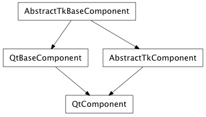

Bases: enaml.widgets.base_component.BaseComponent
A BaseComponent subclass that adds a box model and support for constraints specification. This class represents the most basic visible widget in Enaml.
How strongly a component hugs it’s contents’ width. Valid strengths are ‘weak’, ‘medium’, ‘strong’, ‘required’ and ‘ignore’. Default is ‘strong’. This trait should be overridden on a per-control basis to specify a logical default for the given control.
How strongly a component hugs it’s contents’ height. Valid strengths are ‘weak’, ‘medium’, ‘strong’, ‘required’ and ‘ignore’. Default is ‘strong’. This trait should be overridden on a per-control basis to specify a logical default for the given control.
The combination of (hug_width, hug_height).
How strongly a component resists clipping its contents. Valid strengths are ‘weak’, ‘medium’, ‘strong’, ‘required’ and ‘ignore’. The default is ‘strong’ for width.
How strongly a component resists clipping its contents. Valid strengths are ‘weak’, ‘medium’, ‘strong’, ‘required’ and ‘ignore’. The default is ‘strong’ for height.
The combination of (resist_clip_width, resist_clip_height).
An event that should be emitted by the abstract obj when its size hint has updated do to some change.
A read-only symbolic object that represents the left boundary of the component
A read-only symbolic object that represents the top boundary of the component
A read-only symbolic object that represents the width of the component
A read-only symbolic object that represents the height of the component
A read-only symbolic object that represents the right boundary of the component
A read-only symbolic object that represents the bottom boundary of the component
A read-only symbolic object that represents the vertical center of the component
A read-only symbolic object that represents the horizontal center of the component
Overridden parent class trait
Returns the size hint tuple as given by the abstract widget for its current state.
Resize the abstract widget as specified by the given width and height integers.
Returns the hard minimum (width, height) of the widget, ignoring any windowing decorations. A widget will not be able to be resized smaller than this value
Set the hard minimum width and height of the widget. A widget should not be able to be resized smaller than this value.
Moves the abstract widget to the given x and y integer coordinates which are given relative to the parent origin.
Returns the (x, y, width, height) geometry tuple as given by the abstract widget.

Bases: enaml.widgets.qt.qt_base_component.QtBaseComponent, enaml.widgets.component.AbstractTkComponent
A Qt4 implementation of Component.
Returns the size of the internal toolkit widget, ignoring any windowing decorations, as a (width, height) tuple of integers.
Returns a (width, height) tuple of integers which represent the suggested size of the widget for its current state, ignoring any windowing decorations. This value is used by the layout manager to determine how much space to allocate the widget.
Resizes the internal toolkit widget according the given width and height integers, ignoring any windowing decorations.
Returns the hard minimum (width, height) of the widget, ignoring any windowing decorations. A widget will not be able to be resized smaller than this value
Set the hard minimum width and height of the widget, ignoring any windowing decorations. A widget will not be able to be resized smaller than this value.
Returns the position of the internal toolkit widget as an (x, y) tuple of integers, including any windowing decorations. The coordinates should be relative to the origin of the widget’s parent, or to the screen if the widget is toplevel.
Moves the internal toolkit widget according to the given x and y integers which are relative to the origin of the widget’s parent and includes any windowing decorations.
Returns an (x, y, width, height) tuple of geometry info for the internal toolkit widget, including any windowing decorations.

Bases: enaml.widgets.wx.wx_base_component.WXBaseComponent, enaml.widgets.component.AbstractTkComponent
A wxPython implementation of Component.
Returns the size of the internal toolkit widget, ignoring any windowing decorations, as a (width, height) tuple of integers.
Returns a (width, height) tuple of integers which represent the suggested size of the widget for its current state, ignoring any windowing decorations. This value is used by the layout manager to determine how much space to allocate the widget.
Resizes the internal toolkit widget according the given width and height integers, ignoring any windowing decorations.
Returns the hard minimum (width, height) of the widget, ignoring any windowing decorations. A widget will not be able to be resized smaller than this value
Set the hard minimum width and height of the widget, ignoring any windowing decorations. A widget will not be able to be resized smaller than this value.
Returns the position of the internal toolkit widget as an (x, y) tuple of integers, including any windowing decorations. The coordinates should be relative to the origin of the widget’s parent, or to the screen if the widget is toplevel.
Moves the internal toolkit widget according to the given x and y integers which are relative to the origin of the widget’s parent and includes any windowing decorations.
Returns an (x, y, width, height) tuple of geometry info for the internal toolkit widget, including any windowing decorations.